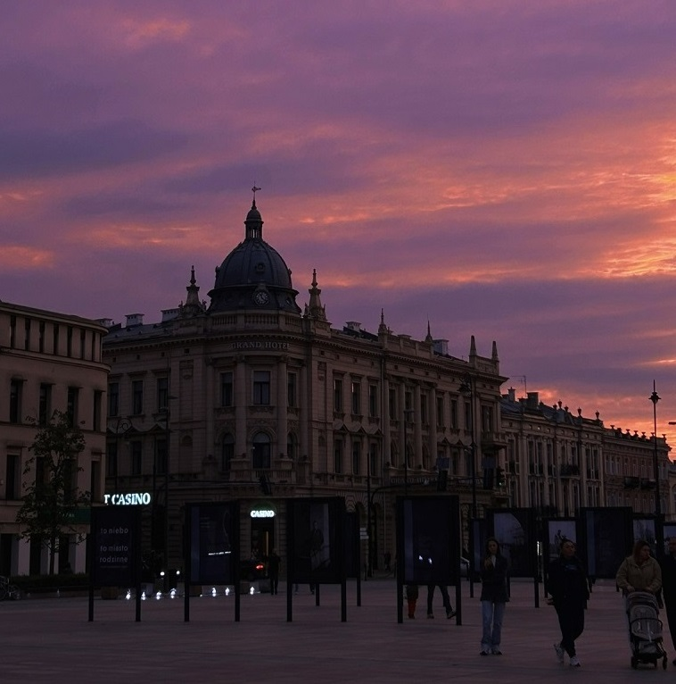
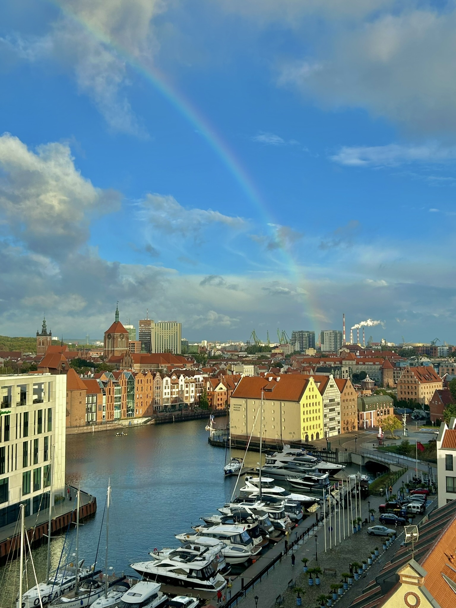
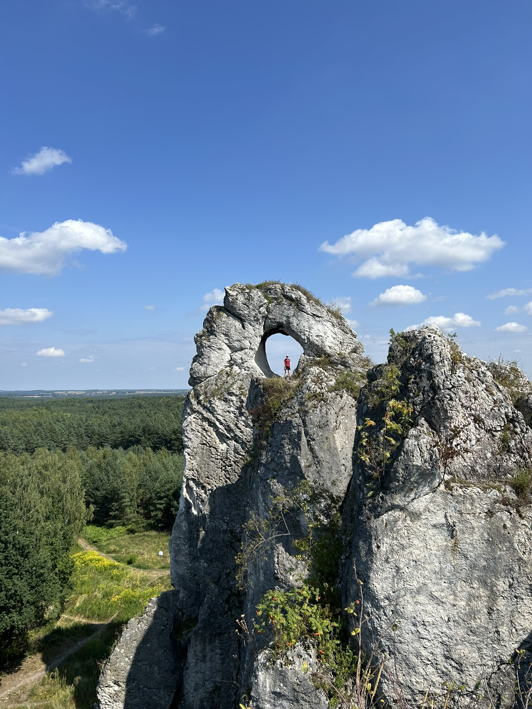
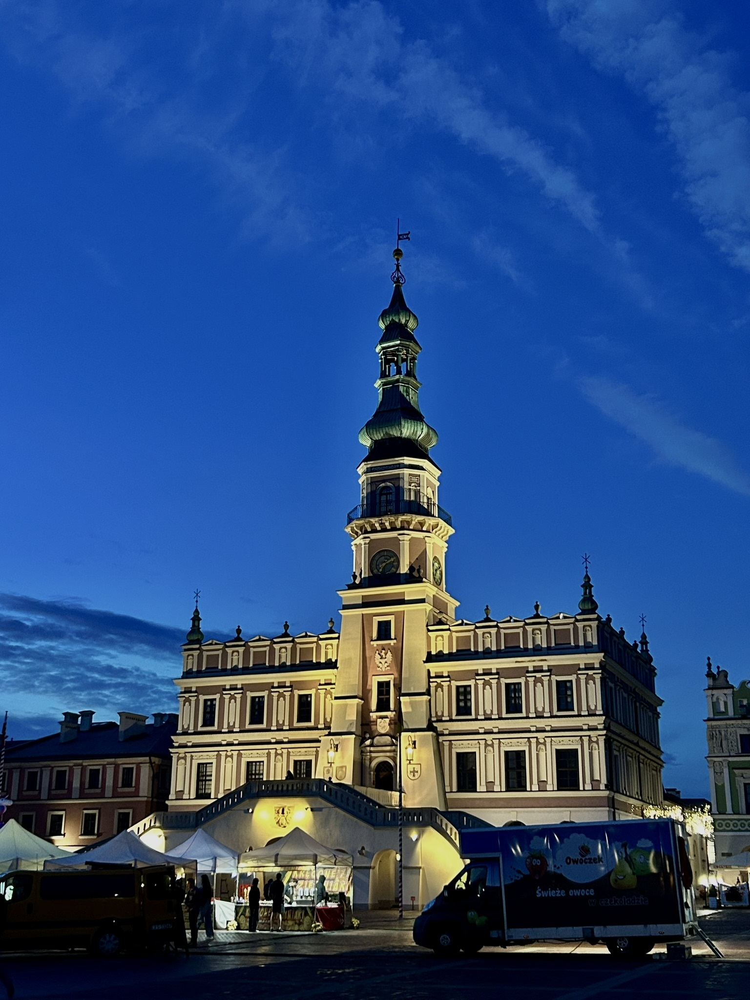
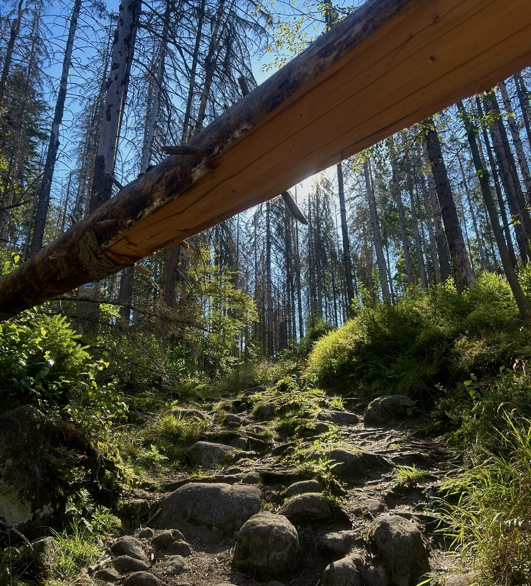
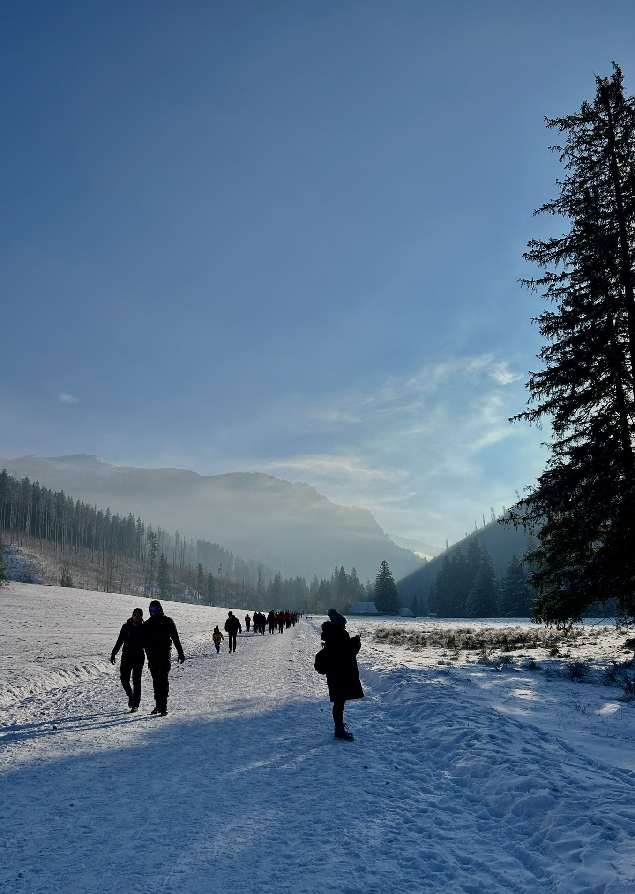
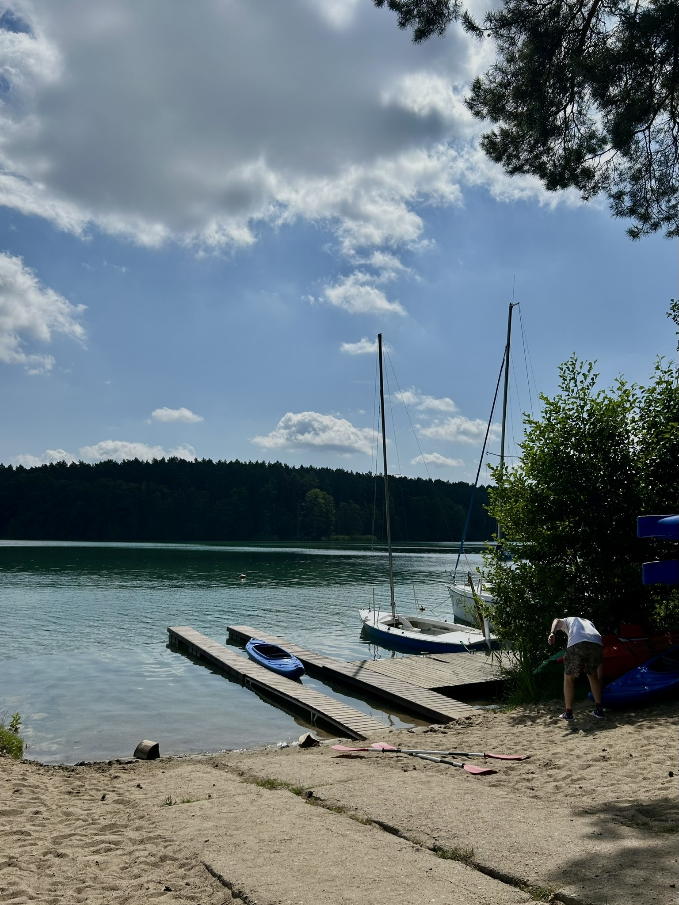
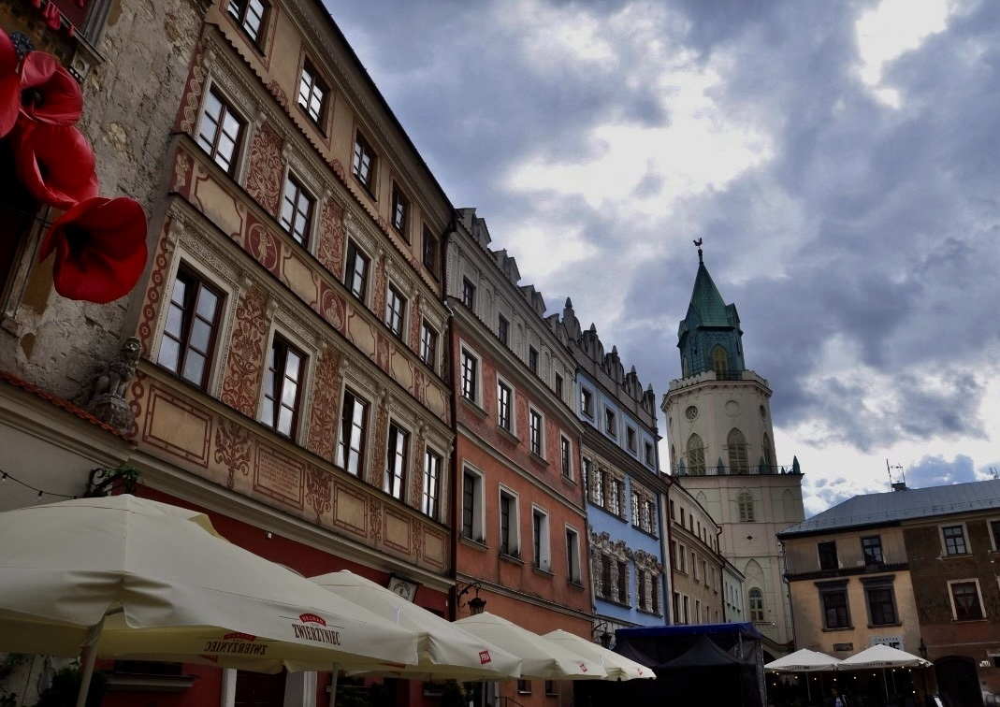
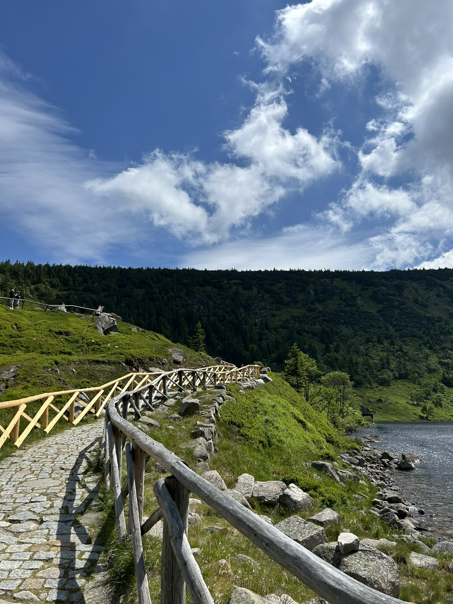
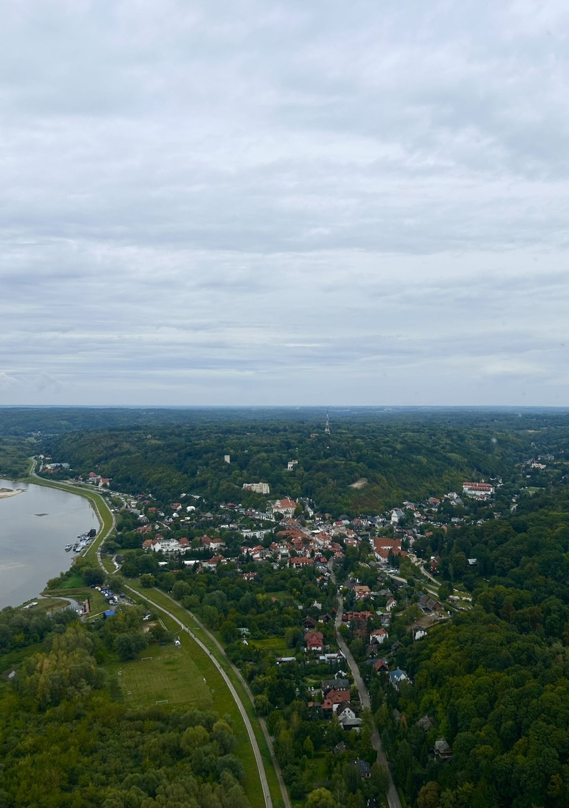

Na tej stronie znajdziesz informacje miejscach w Polsce wartych zobaczenia:


Gdańsk – miasto na prawach powiatu w północnej Polsce w województwie pomorskim,
położone nad Morzem Bałtyckim u ujścia Motławy do Wisły nad Zatoką Gdańską.
Największe miasto w Polsce pod względem powierzchni. Centrum kulturalne,
naukowe i gospodarcze oraz węzeł komunikacyjny północnej Polski, stolica województwa pomorskiego.
Ośrodek gospodarki morskiej z drugim co do wielkości portem handlowym Morza Bałtyckiego
Jest to miasto o ponadtysiącletniej historii, którego tożsamość na przestrzeni wieków kształtowała
się pod wpływem różnych kultur. Gdańsk był również największym miastem Rzeczypospolitej Obojga Narodów,
miastem królewskim i hanzeatyckim, posiadał prawo do czynnego uczestnictwa w akcie wyboru króla,
w XVI w. był najbogatszym w Rzeczypospolitej. Obywatelstwo Gdańska dawało przywilej do posiadania ziemi.
Gdańsk stanowił niezależne terytorium miejskie, w drugiej połowie XVI wieku znajdował się w województwie pomorskim.
Miasto było też ważnym ośrodkiem kulturalnym. W latach 1920–1939 istniało autonomiczne miasto-państwo Wolne Miasto Gdańsk,
pod ochroną Ligi Narodów. Gdańsk uznawany jest za symboliczne miejsce wybuchu II wojny światowej
oraz początku upadku komunizmu w Europie Środkowej. W mieście działa wiele instytucji i placówek kulturalnych.
W Gdańsku odbywają się największe na świecie międzynarodowe targi bursztynu i wyrobów bursztynowych Amberif
Więcej informacji znajdziesz na stronie o Gdańsku

Wyżyna Krakowsko-Częstochowska to makroregion geograficzny położony w południowej Polsce,
wschodnia część Wyżyny Śląsko-Krakowskiej. Znajduje się w dorzeczu górnej Wisły oraz górnej Warty.
Historycznie Wyżyna Krakowsko-Częstochowska leży w zachodniej Małopolsce przy granicy ze Śląskiem.
Na Wyżynie zbudowano system średniowiecznych zamków, niegdyś strzegących granicy
Królestwa Polskiego przed napadami z Górnego Śląska (tzw. Orle Gniazda)
Więcej informacji znajdziesz na stronie o Wyżynie Krakowsko-Częstochowskiej

Zamość to miasto na prawach powiatu w Polsce w południowej części województwa lubelskiego,
siedziba władz powiatu zamojskiego i gminy wiejskiej Zamość. Jest jednym z większych ośrodków kulturalnych,
edukacyjnych i turystycznych województwa, a zwłaszcza Zamojszczyzny.
Za sprawą unikatowego zespołu architektoniczno-urbanistycznego Starego Miasta bywa nazywany „perłą renesansu”,
„miastem arkad” i „Padwą północy”. Pod względem powierzchni plasuje się na 10. miejscu w województwie.
W 1992 r. zamojskie Stare Miasto zostało wpisane na listę światowego dziedzictwa UNESCO.
Według danych GUS z 31 grudnia 2020 r., Zamość liczył 62 785 mieszkańców i był pod względem liczby ludności
drugim (po Lublinie) miastem w województwie lubelskim, a także 63. spośród najludniejszych miast w Polsce.
Zamość leży na historycznej Rusi Czerwonej, w dawnej ziemi chełmskiej
stanowiącej od XIV wieku część Królestwa Polskiego, a dawniej (w X-XI wieku) będącej częścią Grodów Czerwieńskich,
które stanowiły część Polski wczesnopiastowskiej.
Prywatne miasto szlacheckie, założone w oparciu o prawo lokacyjne w 1580 roku, położone było w XVI wieku
w województwie ruskim.
Góry Stołowe to pasmo górskie w łańcuchu Sudetów Środkowych. Wypiętrzone przed 30 milionami lat są jednymi z nielicznych w Europie gór płytowych. Płyty z górnokredowych piaskowców ciosowych ułożone są poziomo – stąd nazwa gór, bo płaskie jak stół. Zachodnia część Gór Stołowych leży na terenie Czech i nosi nazwę Broumovská vrchovina. Północno-zachodni skraj pasma w okolicach Mieroszowa – Gorzeszowa – Krzeszowa – Chełmska – Okrzeszyna nosi nazwę Zaworów. W 1993 na terenie Gór Stołowych utworzono Park Narodowy Gór Stołowych.

Najwyższe szczyty Gór Stołowych to:
Aby poznać więcej informacji na temat najwyższych szczytów Gór Stołowych, wejdż na stronę Góry Stołowe

Tatry – najwyższe pasmo w łańcuchu Karpat, również najwyższe między Alpami a Uralem i Kaukazem.
Są częścią Łańcucha Tatrzańskiego, w Centralnych Karpatach Zachodnich.
Wysokogórska część Tatr o glacjalnym charakterze jest unikatowa w skali Polski i zalicza się
do najwyższej kategorii pod względem atrakcyjności.
Tatry są objęte ochroną przez ustanowienie na ich obszarze polskiego Tatrzańskiego Parku Narodowego
i słowackiego Tatrzańskiego Parku Narodowego oraz przynależności do Światowej Sieci Rezerwatów Biosfery UNESCO.
Powierzchnia Tatr wynosi 785 km², z tego około 175 km² (22,3%) leży w granicach Polski, a ok. 610 km² (77,7%) na terytorium Słowacji.
Długość Tatr, mierzona od południowo-zachodnich podnóży Ostrego Wierchu Kwaczańskiego (1128 m)
do wschodnich podnóży Kobylego Wierchu (1109 m), wynosi w linii prostej 57 km,
a ściśle wzdłuż grani głównej 80 km. Grań główna Tatr przebiega od Niżniej Huciańskiej Przełęczy (905 m) na zachodzie
do Zdziarskiej Przełęczy (1081 m) na wschodzie. Największa szerokość wynosi 18,5 km, przeciętna 15 km.
Znaczną częścią grani głównej Tatr biegnie Wielki Europejski Dział Wodny między zlewniami Morza Bałtyckiego i Morza Czarnego.
Teren na wschód i północ to zlewiska Bałtyku (dorzecze Dunajca i Popradu), pozostały obszar to zlewisko Morza Czarnego (dorzecza Orawy i Wagu).
Wrażenie wypiętrzenia masywu górskiego jest pogłębione przez sąsiedztwo głębokich kotlin.
Tatry otaczają: od zachodu i północy – Obniżenie Orawsko-Podhalańskie, od wschodu i południa Obniżenie Liptowsko-Spiskie.
Dna ich dolin znajdują się na wysokości ok. 500–700 m n.p.m. Deniwelacje między okalającymi kotlinami a szczytami Tatr dochodzą do 2

Mazury – region etnograficzny i geograficzny w północno-wschodniej Polsce, dawniej będący częścią Prus
Główną grupą etnograficzną regionu są Mazurzy.
Mazury są zwyczajowo traktowane jako kraina historyczna, mimo iż z naukowego punktu widzenia nie spełniają definicji tego pojęcia.
Mazury nigdy nie stanowiły odrębnej jednostki administracyjnej ani pod względem historycznym, ani kościelnym czy świeckim,
dlatego po części nie da się ustalić ścisłych granic tego regionu.
Prusy kolonizowane były od południa przez ludność polską już w czasach krzyżackich,
natomiast najszerszy zasięg język polski osiągnął tu po 1600 roku.
Północną linię zasięgu języka polskiego wyznaczały wówczas takie miejscowości jak: Cynty (Korniewo), Bartoszyce i Wystruć (Czerniachowsk).
W następnych stuleciach polszczyzna cofnęła się ku południu.
Od 1525 do 1657 roku Mazury były pod zwierzchnictwem Polski stanowiąc część lennych Prus Książęcych, które przeszły w 1525 na protestantyzm.
Wraz z reformacją narodziła się odrębność regionu – wiara stała się głównym wyznacznikiem ludności zamieszkującej Mazury.
Od końca XIX stulecia określając granice regionu, najczęściej odwoływano się do stwierdzenia Friedricha Krosty z 1876 roku:

Lublin – miasto na prawach powiatu we wschodniej Polsce, stolica województwa i powiatu lubelskiego,
centralny ośrodek aglomeracji lubelskiej i Lubelskiego Obszaru Metropolitalnego.
Drugie w historycznej Małopolsce i ósme co do wielkości populacji miasto w kraju
z liczbą ludności wynoszącą 326 700 (stan na 31 grudnia 2025).
Położone na Wyżynie Lubelskiej nad Bystrzycą, na dwóch odmiennych obszarach.
Część zachodnia ma urozmaiconą rzeźbę terenu. Występują tam liczne wąwozy, doliny i wzgórza.
Część wschodnia jest płaska. Lublin jest ulokowany ok. 170 km od Warszawy,
nieopodal granicy krain historycznych: Małopolski i Rusi Czerwonej i
ok. 100 km od przejścia granicznego z Ukrainą

Karkonosze (pol. n. tradyc. do 1946 Góry Olbrzymie, również Karkonosze, cz. Krkonoše, w dialekcie północnowschodnioczeskim,
Kerkonoše śl.-niem. Riesageberge, niem. Riesengebirge, ang. Giant Mountains)
(332,37) – najwyższe pasmo górskie Sudetów i zarazem Czech rozciągające się na przestrzeni ok. 40 km
(od Przełęczy Szklarskiej na zachodzie do Przełęczy Lubawskiej na wschodzie).
Szerokość pasma waha się od 8 do 20 km. Karkonosze zajmują powierzchnię ok. 650 km², z czego do Polski należy 185 km² czyli 28,46%.
Głównym grzbietem oraz Grzbietem Lasockim przebiega granica polsko-czeska.
Najwyższym szczytem jest Śnieżka (1603 m n.p.m.) – najwyższy szczyt Czech, Sudetów, województwa dolnośląskiego i Śląska.
Karkonosze należą do Światowej Sieci Rezerwatów Biosfery UNESCO i są chronione poprzez
utworzenie na ich terenie Karkonoskiego Parku Narodowego oraz Krkonošského národní parku.

Kazimierz Dolny – miasto w Polsce w województwie lubelskim,

Autor zdjęć: Gabriela Wróbel
Informacje
Gdańsk
Jura Krakowsko-Częstochowska
Zamość
Góry Stołowe Góry Stołowe
Tatry
Mazury
Lublin
Karkonosze
Kazimierz Dolny